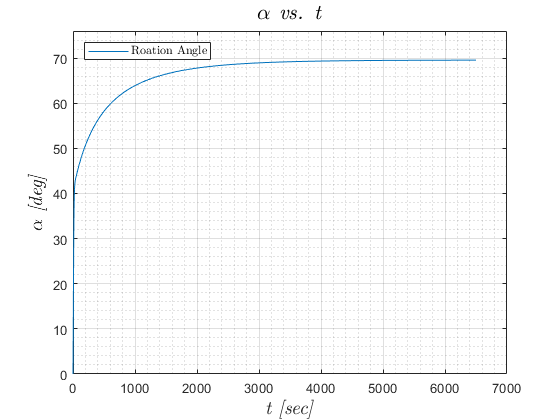
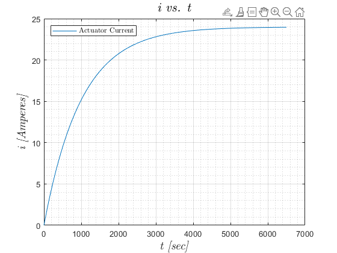

Contents
clear; close all; clc
Question 1
Defining time vector
time = 0:.01:6500; % Solving ODE using ode45 [T, m] = ode45(@electromechanicalODEs, time, [0 0 0]); % Extracting constants in ODE fxn [~, constants] = electromechanicalODEs(T, m); % Creating new figure figure(1) % Plotting rotation angle vs. time plot(T, m(:, 1) * (180 / pi), 'displayName', 'Roation Angle') % Plot parameters grid on grid minor ylim([0 76]); % Plot descriptors title('\emph{$\alpha$ vs. t}', 'fontsize', ... 16, 'Interpreter', 'Latex') xlabel('\emph{t [sec]}', 'fontsize', 14, 'Interpreter', 'Latex') ylabel('\emph{$\alpha$ [deg]}',... 'fontsize', 14, 'Interpreter', 'Latex') legend('location', 'northwest', 'Interpreter', 'Latex') % Creating new figure figure(2) % Plotting actuator current vs. time plot(T, m(:, 3), 'displayName', 'Actuator Current') % Plot parameters grid on grid minor % Plot descriptors title('\emph{i vs. t}', 'fontsize', ... 16, 'Interpreter', 'Latex') xlabel('\emph{t [sec]}', 'fontsize', 14, 'Interpreter', 'Latex') ylabel('\emph{i [Amperes]}',... 'fontsize', 14, 'Interpreter', 'Latex') legend('location', 'northwest', 'Interpreter', 'Latex') 
Question 2
% Definign symbolic variables syms ii % Equillibrium equation #1 eqEqn = 0 == (constants.d(3) - ii) / constants.d(4); % Solving for current equilibrium point algebraically iStarAlgeba = solve(eqEqn, ii); % Solving for equilibrium points alphaStar.rad = m(end, 1); alphaDotStar = m(end, 2); iStar = m(end, 3); % Converting radians to degrees alphaStar.deg = alphaStar.rad * (180 /pi);
Question 3
Defining symbolic variables
syms alphaDot alpha ii d1 d2 % Defining field names for structure containing nonlinear equations fieldNames = {'eq1', 'eq2', 'eq3', 'eq4'}; % Defining symbolic math precision precision = 4; % ----- Linearizing sin(alphaDot)----- nonlinear.eq1 = sin(alphaDot); var.eq1 = alphaDot; varNew.eq1 = alphaDotStar; % ----- Linearizing tan(alpha) ----- nonlinear.eq2 = tan(alpha); var.eq2 = alpha; varNew.eq2 = alphaStar.rad; % ----- Linearizing alpha^.3 * exp(-.05*alpha^.5) ----- nonlinear.eq3 = (alpha ^ .3) * exp(-.05 * (alpha ^ .5)); var.eq3 = alpha; varNew.eq3 = alphaStar.rad; % ----- Linearizing (alphaDot * alpha * i)/(d1 + (d2 * alpha)) ----- nonlinear.eq4 = (alphaDot * alpha * ii) / (constants.d(1) + ... (constants.d(2) * alpha)); var.eq4 = [alpha alphaDot ii]; varNew.eq4 = [alphaStar.rad alphaDotStar iStar]; for jj = 1:length(fieldnames(nonlinear)) if jj ~= 4 linear.(fieldNames{jj}) = ... vpa(subs(nonlinear.(fieldNames{jj}),var.(fieldNames{jj}), ... varNew.(fieldNames{jj})) + ... (subs(diff(nonlinear.(fieldNames{jj}), ... var.(fieldNames{jj})), var.(fieldNames{jj}), ... varNew.(fieldNames{jj})) ... * (var.(fieldNames{jj}) - varNew.(fieldNames{jj}))), ... precision); else linear.eq4 = vpa(subs(nonlinear.eq4, var.eq4, varNew.eq4) + ... (subs(diff(nonlinear.eq4, var.eq4(1)), ... var.eq4, varNew.eq4) * ... (var.eq4(1) - varNew.eq4(1))) + ... (subs(diff(nonlinear.eq4, var.eq4(2)), ... var.eq4, varNew.eq4) * ... (var.eq4(2) - varNew.eq4(2))) + ... (subs(diff(nonlinear.eq4, var.eq4(3)), ... var.eq4, varNew.eq4) * ... (var.eq4(3) - varNew.eq4(3))), precision); end end % Compiling linearized ODEs % Defining additional symbolic variable syms alphaDoubleDot % Linear ODE#1 linear.completeODE1 = vpa((constants.a * alphaDoubleDot) + ... (constants.b * linear.eq1) + ... (constants.c * linear.eq2) == (constants.k * ii) + ... linear.eq3, precision); % Linear ODE#2 linear.completeODE2 = vpa(linear.eq4 + ... ((constants.d(3) - ii) / constants.d(4)), precision);
Question 4
Defining additional symbolic variables
syms s Alpha I % Linear ODE#1 in frequency domain frequency.ODE1 = Alpha * ((s ^ 2) + (0.54 * s) + 7.9601) ... == (0.07 * I) + (7.9839 / s); % Linear ODE#2 in frquency domain frequency.ODE2 = s * I == (.055 * Alpha * s) + (.001 * I) + (.024 / s); % Solving system of euqations frequency.solution = solve(frequency.ODE1, frequency.ODE2, Alpha, I); % Transfer function TF = frequency.solution.Alpha / frequency.solution.I; % Printing transfer function pretty(TF); % TF Numerator num = [26613000 -21013]; % TF Denominator den = [80000 1506915 636808]; % System transfer function system = tf(num, den);
26613000 s - 21013
-----------------------------
2
80000 s + 1506915 s + 636808